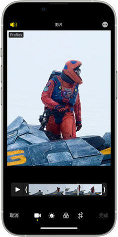

<div class="camera-pro-res">
  <div class="shared-container">
    <div class="font-style-container text-container-1">
      <p class="intro">
        <span class="wrap">拍攝，</span><span class="wrap">剪輯，</span
        ><span class="wrap">到傳送，</span>
      </p>

      <p class="title">全都是 ProRes。</p>
    </div>

    <picture class="image-container">
      <source
        srcset="../../../../../public/images/section-camera-camera-pro-res-large.jpg"
        media="(min-width: 1068px)"
      />
      <source
        srcset="../../../../../public/images/section-camera-camera-pro-res-medium.jpg"
        media="(min-width: 734px)"
      />
      <source
        srcset="../../../../../public/images/section-camera-camera-pro-res-small.jpg"
      />
      
    </picture>

    <div class="font-style-container text-container-2">
      <div class="flex-item-container-1">
        <p class="text">
          ProRes
          的高色彩保真度與低壓縮率，讓你隨時隨地拍攝、剪輯和傳送可供播送的內容。現在，你可在
          iPhone 上全程以 ProRes 完成計畫案；或是將 iPhone 上的 ProRes
          影片輕鬆輸入 Mac 的 Final Cut Pro 中<span class="nowrap">處理。</span>
        </p>

        <p class="text">即將推出</p>
      </div>

      <div class="flex-item-container-2">
        <p class="title">
          第一部提供端對端專業工作流程的智慧型手機，讓你能以 ProRes
          或杜比視界進行錄製及剪輯
        </p>
      </div>
    </div>
  </div>
</div>
